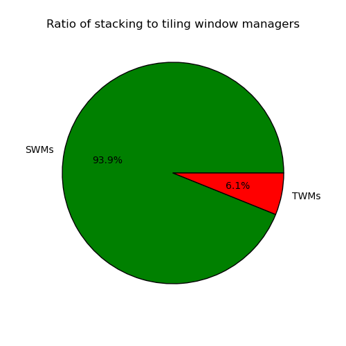
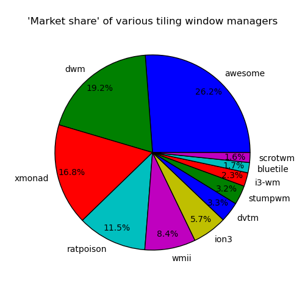
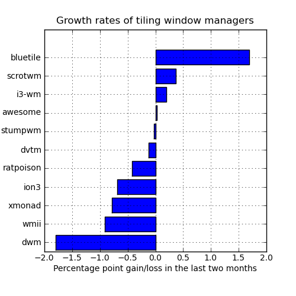

The state of tiling window managers - a few statistics
These are a few numbers that I compiled to satisfy my curiousity. They are based on data collected by the Debian Popularity Contest and as such only take Debian users into account. I have no idea how representative this is, but it's fun to look at regardless. :-)
To start things off: A rough approximation of the ratio of stacking ('normal') window managers to tiling window managers. This takes installations of Debian packages for a number of window managers into account. I tried to pick a somewhat representative list of window managers [1], but it might be totally off. =) Also: This does not take into account the recent addition of tiling capabilities to KWin.

The following shows 'market share' for various tiling window managers. I tried to include all TWMs that have a Debian package and a least a small installation base. Hopefully I haven't overlooked any relevant projects.
Awesome and XMonad are usually the first projects to be mentioned when the topic of tiling comes up. Together they dominate almost half of the 'TWM market'. I'm surprised about the high percentage for dwm though, considering that this counts the installed Debian packages which you can't use, if you configure dwm (to change the configuration of dwm you have to compile from source). Apparently a lot of people are happy with the defaults (?).

Finally: Growth rates for these TWMs. This shows how the respective market share of the projects has changed over the last two months.
Sadly, a lot of projects are actually losing users right now - or at least Debian users. It's still my favorite graph though, since Bluetile is doing so well on it. :-)

And at the current rate of development, Bluetile will overtake Awesome in just under 2 and 1/2 years. ;-)